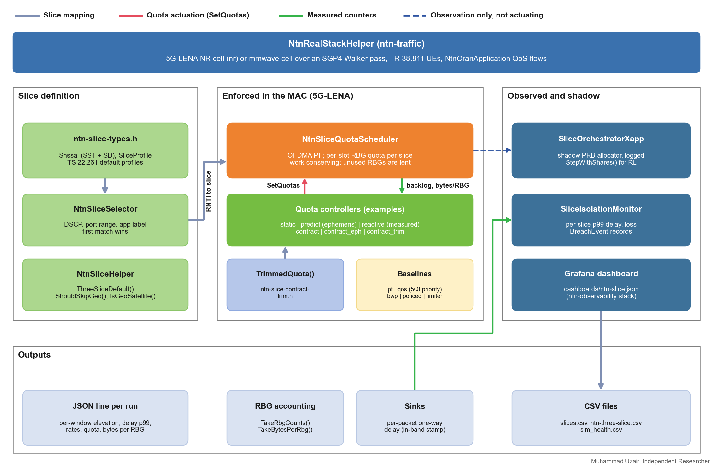
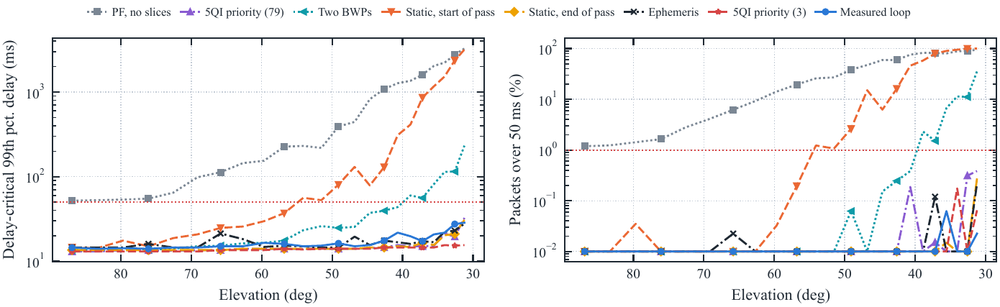
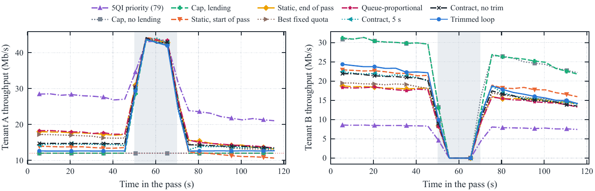

ntn-slice¶
Network slicing on a satellite cell in ns-3: per-slot RBG quotas enforced in the NR MAC, controllers that follow the pass, and SLA monitors that report tails rather than means
Project page, release and live runs

Project page · Release v3.0.0 · Run the examples at 6g-ntn.live · YouTube demo · LinkedIn


Toolkit · Docs · Install · Examples · Results
Why this module¶
A slice is only a slice if the radio treats it differently. On a LEO cell that is harder than on the ground, because what a resource block carries changes over a pass: as the satellite recedes, the slant range grows, the MCS drops and a share that was enough at the start of the pass stops being enough near its end.
ntn-slice provides both halves. NtnSliceQuotaScheduler, a 5G-LENA OFDMA proportional-fair scheduler, enforces a per-slot RBG quota for each slice and lends what a slice leaves unused, so the partition is real in the MAC. The examples close loops around it: quotas from the ephemeris, from measured backlog and bytes per RBG, or from a tenant's rate contract with a delivered-rate trim. Around this sit the slice vocabulary (S-NSSAI, SliceProfile with TS 22.261 defaults, a flow selector), a GEO mode-skip rule for latency-bound slices, and an isolation monitor that keeps a delay histogram, so a p99 is a percentile and not a mean.
System design¶

Figure 1. Classes and data flow. The selector maps flows (and through RNTIs, UEs) to slices; controllers in the examples call SetQuotas() on NtnSliceQuotaScheduler every control period and read back its measured counters. SliceOrchestratorXapp is a shadow allocator: its PRB split is logged but does not reach the MAC. Source: doc/figures/make_architecture.py.
Results¶
The results come from a slicing study on a LEO pass, run with this module's ntn-slice-pass-leo and ntn-slice-tenants-leo examples on a 5G-LENA cell. The study binaries are those examples with passive additions not yet merged here (block counters read from the UE PHY trace, a queue-proportional baseline, an --aLimited switch); no scheduler code differs. Patch, regression check and campaign scripts: paper/tnsm-2026-slice-quotas/ of the toolkit tree (ns3_patch/, compare_rev.py, run_final.py, make_macros5.py).
Experiment. One cell of 2.185 GHz and 20 MHz (numerology 1) through a 550 km, 53 degree SGP4 satellite with 55 dBm and an 8 x 8 array, free space plus TR 38.811 excess loss. The UE cluster sees the satellite recede from 87 to 31 degrees elevation over a 120 s run. Each mechanism runs on the same 12 seeds; every number below is a median over those seeds.

Figure 2. Delay-critical slice (16 Mb/s, 50 ms budget) at full load over the falling pass: 99th-percentile one-way delay (left) and share of packets over 50 ms (right) per 5 s window, medians over 12 seeds. Thin lines mark 50 ms and 1 %; a share of zero is drawn at 0.01 %.
Mechanism (--policy) |
p99 delay, median (worst seed) | p99.9 delay | Windows over target (%) | eMBB (Mb/s) | All (Mb/s) |
|---|---|---|---|---|---|
PF, no slices (pf) |
2.8 s (6.7 s) | 3.4 s | 91 | 18.6 | 34.5 |
Two equal BWPs (bwp) |
133 ms (429 ms) | 261 ms | 26 | 20.6 | 36.6 |
Static quota sized at the start (static) |
2.6 s (3.6 s) | 3.4 s | 52 | 15.2 | 31.1 |
Static quota sized at the end (static) |
16 ms (22 ms) | 39 ms | 0 | 14.8 | 30.9 |
Ephemeris-driven quota (predict) |
20 ms (33 ms) | 49 ms | 0 | 14.2 | 30.3 |
Measured closed loop (reactive) |
19 ms (26 ms) | 47 ms | 0 | 14.4 | 30.4 |
5QI priority, 5QI 79 (qos) |
15 ms (54 ms) | 58 ms | 0 | 17.2 | 33.3 |
5QI priority, 5QI 3 (qos) |
14 ms (15 ms) | 32 ms | 0 | 17.1 | 33.2 |
What the data say: on the calibration seed the delay-critical slice carried 77 bytes per RBG at 87 degrees and 50 at 31 degrees, 36 % less, so the quota it needs rises from 0.48 to 0.74 of the RBGs. A quota sized for the start of the pass failed once that headroom was used up; the measured loop and the ephemeris loop both kept up, and knowing the orbit bought nothing measurable over measuring. Priority with the strong 5QI 3 class gave the lowest tail, and both priority settings left eMBB about 2.7 Mb/s more than the measured loop; the study traces most of that lead to how this stack schedules retransmissions, not to the priority rule itself.

Figure 3. Two tenants on the same cell, contract R = 12 Mb/s for tenant A, decoding errors on, medians over 12 seeds. Tenant B pauses in the shaded interval. "Queue-proportional" is the study-only baseline.
Mechanism (--policy) |
A (Mb/s) | Lowest A window | Busy windows below R | B (Mb/s) | Busy total (Mb/s) |
|---|---|---|---|---|---|
PF, no slices (pf) |
17.6 | 15.4 | 0 % | 17.4 | 35.0 |
5QI priority (qos) |
25.1 | 20.6 | 0 % | 8.1 | 33.3 |
Rate cap, no lending (policed) |
12.0 | 12.0 | 0 % | 27.4 | 39.4 |
Rate cap, lending (limiter) |
12.0 | 12.0 | 0 % | 27.5 | 39.5 |
Static quota, start of pass (static) |
12.5 | 10.6 | 33 % | 19.9 | 32.5 |
Static quota, best of sweep, 0.42 (static) |
15.2 | 12.4 | 0 % | 17.3 | 32.5 |
Contract quota (contract) |
14.3 | 13.4 | 0 % | 18.3 | 32.6 |
Contract quota, ephemeris table (contract_eph) |
14.4 | 12.9 | 0 % | 18.1 | 32.4 |
Trimmed contract loop (contract_trim) |
12.6 | 12.5 | 0 % | 19.8 | 32.5 |
The trimmed loop held tenant A near its 12.6 Mb/s target and left tenant B more than the best fixed quota did; the rate cap with lending left B the most, and the cap without lending held A at 12.0 Mb/s even while B was idle, so it is not work conserving. Values are copied from paper/tnsm-2026-slice-quotas/make_macros5.py, written by sim/make_macros5.py from the run outputs in sim/out/.
Architecture and classes¶
| Header | Provides |
|---|---|
model/ntn-slice-quota-scheduler.h |
NtnSliceQuotaScheduler (derived from NrMacSchedulerOfdmaPF): SetSliceOfRnti(), SetQuotas(), TakeRbgCounts(), TakeBacklog(), TakeBytesPerRbg(), and a per-slot allocation trace. A slice with demand gets at least floor(quota x RBGs) per slot; leftover RBGs go to any slice with data. Uplink stays plain PF. |
model/ntn-slice-contract-trim.h |
TrimmedQuota(): scales a tenant quota by (target bytes / delivered bytes)^gain, clamped. |
model/ntn-slice-types.h |
SliceSst, Snssai (8-bit SST + 24-bit SD, packed codecs), SliceProfile, default eMBB, URLLC and mMTC profiles after TS 22.261 Table 7.1-1. |
model/ntn-slice-selector.h |
NtnSliceSelector: DSCP, port-range and app-label rule chain, first match wins, default fallback. |
model/slice-orchestrator-xapp.h |
SliceOrchestratorXapp: min-throughput reservation plus priority-weighted sharing; Step() and StepWithShares() for an RL policy. Shadow allocator, see limitations. |
model/slice-isolation-monitor.h |
SliceIsolationMonitor: rolling per-slice p99 delay and cumulative loss, BreachEvent records. |
helper/ntn-slice-helper.h |
NtnSliceHelper::ThreeSliceDefault(), ShouldSkipGeo(), IsGeoSatellite() (30 000 km boundary). |
A Grafana dashboard (dashboards/ntn-slice.json) plugs into the stack of the ntn-observability module.
Quick start¶
Inside the toolkit, where the module is already present and built:
./ns3 run "ntn-slice-quota-leo --policy=reactive"
./ns3 run "ntn-slice-pass-leo --policy=reactive --duration=120"
./ns3 run "ntn-slice-tenants-leo --policy=contract_trim --contractMbps=12"
Standalone, into an existing ns-3.49 tree:
git clone -b ntn-slice-v4 https://github.com/Muhammaduazir69/ntn-slice.git contrib/ntn-slice
./ns3 configure --enable-examples --enable-tests
./ns3 build
The library links nr (5G-LENA), ntn-traffic and ntn-constellation; the examples also use ntn-cho and, for the older three, mmwave and lte. The toolkit tree has all of them. INSTALL.md lists the details.
Examples¶
| Example | What it shows | Command |
|---|---|---|
ntn-slice-pass-leo |
Three slices on one 5G-LENA cell while the satellite recedes; policies pf, qos, bwp, static, predict, reactive; one JSON line with per-window elevation, delay-critical p99, deadline misses, rates, quota and bytes per RBG |
./ns3 run "ntn-slice-pass-leo --policy=predict" |
ntn-slice-tenants-leo |
Two elastic tenants and an mMTC slice; tenant A buys --contractMbps; policies pf, qos, policed, limiter, static, contract, contract_eph, contract_trim; tenant B pauses to show who may borrow |
./ns3 run "ntn-slice-tenants-leo --policy=limiter" |
ntn-slice-quota-leo |
eMBB, URLLC and mMTC with the partition enforced by the MAC; pf, bwp, static, reactive; per-slice delay percentiles and the RBG share actually granted |
./ns3 run "ntn-slice-quota-leo --policy=static" |
ntn-three-slice-leo-geo |
Three slices over LEO and GEO with URLLC GEO mode-skip; latency from the real LEO and GEO slant ranges, delivery gated by measured TBLER | ./ns3 run "ntn-three-slice-leo-geo --simTime=30" |
ntn-slice-isolation-traffic |
Slices sharing one mmwave cell under eMBB saturation; writes slices.csv with per-slice SINR, throughput, delay and breach flags |
./ns3 run "ntn-slice-isolation-traffic --simSeconds=15 --numUes=9" |
ntn-slice-real-stack |
Minimal shared-cell recipe with the isolation monitor on measured delivery | ./ns3 run "ntn-slice-real-stack --duration=15 --numUes=9" |
Tests¶
ntn-slice (Type::UNIT, 9 cases): S-NSSAI round trips, selector first match, URLLC minimum under eMBB load, p99 breach detection, GEO mode-skip, three-slice coexistence, RL shares, cumulative loss, and the monitor under Simulator::Run(). ntn-slice-quota-scheduler (Type::SYSTEM, 3 cases): each saturated slice gets at least its quota, an idle slice's quota goes to a slice with data, and the contract trim converges despite leftovers and rounding.
Dependencies¶
ns-3.49 with nr (5G-LENA) for the quota scheduler; ntn-traffic, ntn-constellation, ntn-cho; mmwave and lte for the three shared-cell examples.
Scope and limitations¶
- The quota scheduler acts on the downlink only; the uplink is scheduled by the parent PF scheduler unchanged.
SliceOrchestratorXappis an open-loop shadow allocator: its PRB decisions are computed and logged but do not drive any MAC. In the three mmwave examples the 5QI and S-NSSAI are packet labels the MAC never reads, and isolation there is observed, not enforced. Enforcement is the 5G-LENA quota scheduler path.- The V2X SST value (4) is defined but has no default profile.
- The Results are one cell, one satellite pass geometry and 12 seeds; the queue-proportional baseline and the block counters exist only in the study patch.
Standards¶
3GPP TS 23.501 (S-NSSAI, 5QI and standardized QoS characteristics), TS 22.261 (service requirements and demand profiles), TS 38.300 (QoS flow to DRB mapping), TS 38.101-5 (NTN FR1 channel bandwidths), TR 38.811 and TR 38.821 (NTN channel and latency budgets).
Citation¶
If you use this module, please cite the toolkit article:
@article{uzair2026ns3ntntoolkit,
author = {Uzair, Muhammad and others},
title = {ns3-ntn-toolkit: An Integrated ns-3 Platform for {6G} Non-Terrestrial Networks},
journal = {IEEE Open Journal of the Communications Society},
year = {2026},
doi = {10.1109/OJCOMS.2026.3745010}
}
License¶
GPL-2.0-only, matching ns-3.
Contact¶
Muhammad Uzair, Independent Researcher. muhammaduzairr69@gmail.com, ORCID 0009-0002-4104-2680. Part of the ns3-ntn-toolkit; mirrored on GitLab.